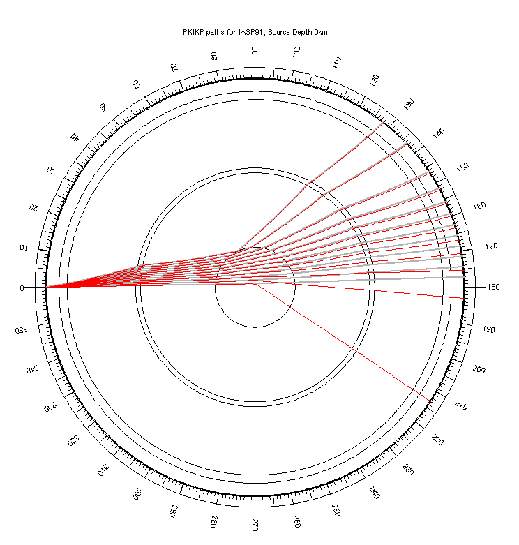
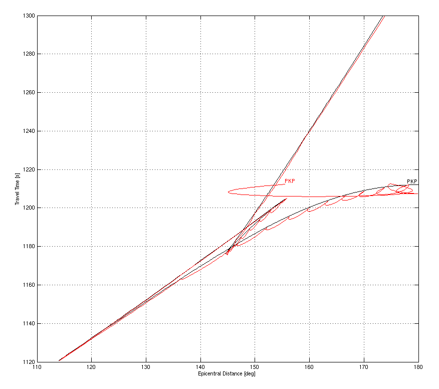
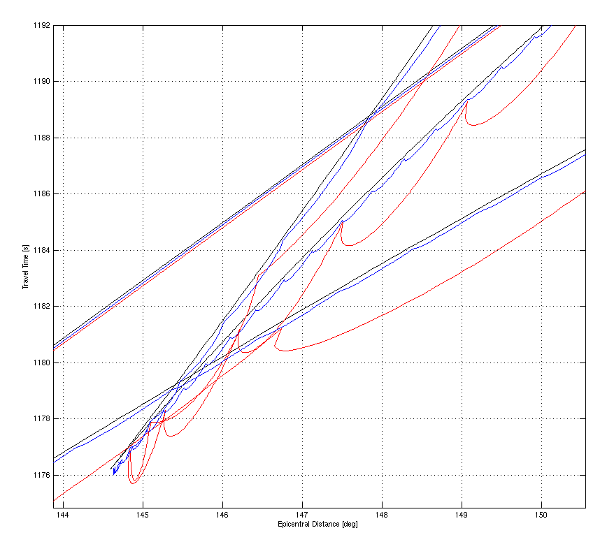
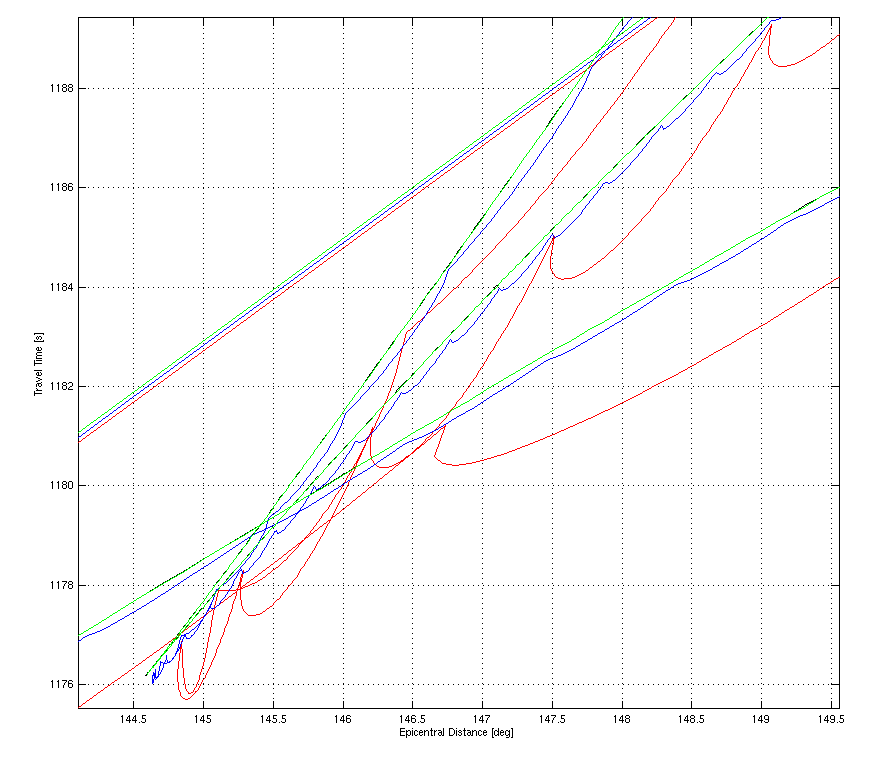

Good and Bad Depth Sampling
am besten macht man hier draus eine eigene section im inhaltsverzeichnis, mit mehreren unterseiten. das wird sonst zu lang in einem file.
Content
A sufficient depth sampling is the prerequisite of accurate ray geometry and travel time computations. But what is "sufficient"? This section demonstrates some effects of insufficient sampling tu guide the user.
It consists of the following subsections:
The examples given in this section are all computed with routines and models contained in the TTBOX distribution, enabling the reader to repeat extend them.
All examples use a number of example models that were generated using the following commands:
%%% read the IASP91 model in its polynomial form
iasp91=mkreadclr([mkttboxdata 'iasp91.clr'],'silent');
%%% depth sample distance: 1km in flat earth coordinates
%%% This is a very good sampling and serves as reference in the following
iasp91_1km=mkclr2model(iasp91,1,'flat');
%%% depth sample distance: 10km in flat earth coordinates
iasp91_10km=mkclr2model(iasp91,10,'flat');
%%% depth sample distance: 100km in flat earth coordinates
iasp91_100km=mkclr2model(iasp91,100,'flat');
%%% depth sample distance: 100km in spherical coordinates
%%% For core phases, this is a really bad depth sampling
iasp91_100km_sph=mkclr2model(iasp91,100,'spherical');
%%% depth sample distance: 10km in spherical coordinates
iasp91_10km_sph=mkclr2model(iasp91,10,'spherical');
TTBOX uses the Flat Earth Transform to evaluate both Epicentral Distance and Travel Time as functions of ray parameter. This transformation allows to replace a spherical symmetric model by a cartesian, rectangular one and thus to avoid the complications of polar coordinates. However, this is not without cost: the Flat Earth Transform shifts the planets center towards infinite depth, and the integral equations have singularities there.
The consequence is, that small angular distances close to the planet's center are transformed into long cartesian distances at very great depth, and thus small inaccuracies in the determination of the depth reached by a certain ray are amplified into big errors in the resulting epicentral distance and travel time. This effect gets worse when the depth sampling is poor, because the evaluation of the integrals performs a linear interpolation between the individual samples - but in the rectangular replacement model.
|

|
Erroneous ray geometry due to poor depth sampling: The closer rays come to the singularity in the planet's center, the more they deviate from the true path. Thick grey lines: reference model (sampling distance constantly 1km in flat earth coordinates). Red lines: poorly sampled model (sampling distance constantly 100km in spherical coordinates).
This plot was generated using the follwing commands:
clf;
rayhandles=mkrayfan('PKIKP',iasp91_1km,0,0.5);
set(rayhandles,'Color',[1 1 1]*0.7);
set(rayhandles,'LineWidth',2);
hold on;
mkrayfan('PKIKP',iasp91_100km_sph,0,0.5,'r');
hold off;
|

|
As above, but for sampling distance 10km in spherical coordinates (red lines). Thick grey lines: reference model (sampling distance constantly 1km in flat earth coordinates).
This plot was generated using the follwing commands:
clf;
rayhandles=mkrayfan('PKIKP',iasp91_1km,0,0.5);
set(rayhandles,'Color',[1 1 1]*0.7);
set(rayhandles,'LineWidth',2);
hold on;
mkrayfan('PKIKP',iasp91_10km_sph,0,0.5,'r');
hold off;
|
Using a depth sampling that has constant sample interval in flat earth coordinates rather than in spherical coordinates, as provided by the "flat" operation mode of MKCLR2MODEL, produces a clearly superior depth sampling: With 100km-sampling distance in flat earth coordinates, the ray geometry is significantly better than with a 10km-sampling in spherical coordinates, but the number of samples in the former is less than 50% of the number of samples in the latter. A sampling that uses constant spacing in flat earth is not only more precise but also faster in evaluation, since computation time scales with sample number.

|
Close-up of a comparison with a model that uses 100km (one hundred km) sample distance in flat earth coordinates (blue lines). The small difference between the 1km-flat and the 100km-flat sampling demonstrates the superiority of regulat sampling in flat earth. Red lines: 10km (ten km) sampling in spherical coordinates. Thick grey lines: reference model (sampling distance constantly 1km in flat earth coordinates).
This plot was generated using the follwing commands:
clf;
rayhandles=mkrayfan('PKIKP',iasp91_1km,0,0.5);
set(rayhandles,'Color',[1 1 1]*0.7);
set(rayhandles,'LineWidth',2);
hold on;
mkrayfan('PKIKP',iasp91_10km_sph,0,0.5,'r');
mkrayfan('PKIKP',iasp91_100km,0,0.5,'b');
hold off;
|
Note that plots as shown above can show only the larger errors. Do produce ray fan plots it might thus be sufficient to use a relatively crude sampling, but for higher numerical precision, finer samplings are necessary. Although the ray geometry for 1km and 100km sampling in flat earth appears to be very similar, the differences in travel time between these two models will be inacceptable for many applications.
The effects of the infinite depth of the flat earth model are also visible in the shape of travel time curves. The causes for the distortions are the same as for the ray geometry: linear approximation is not sufficient at great depth if the sample distance is large. But in travel time curves, they become visible more clearly.
The general shape of the PKP triplication is reproduced if the velocity model is sampled with 100km sample distance in spherical coordinates, but the steeper the rays are, the more erroneous the resulting traveltimes become. The loops in the traveltime curve are all artefacts of the poor sampling.
|

|
Errors in the travel time curve of PKP due to sparse samplimg; Black: sampling distance constantly 1km in flat earth coordinates, Red: sampling distance constantly 100km in spherical coordinates.
This plot was produced using the following commands:
clf;
ttc_1km=mkttcurves(iasp91_1km,0,0.01,'PKP');
mkplotttcurves(ttc_1km,'k-');
ttc=mkttcurves(iasp91_100km_sph,0,0.01,'PKP');
mkplotttcurves(ttc,'r-');
box on;
grid on;
xlabel('Epicentral Distance [deg]');
ylabel('Travel Time [s]');
|
The computation of the reference curve in tha above plot with an 1km sampling in flat earth coordinates took about 2h on a 3GHz PC (0.01deg steps in takeoff angle are quite small), which ist why one cannot always use the finest possible sampling.
A sampling with 100km sample distance in flat earth coordinates produces significantly better results, but a closeup reveals that it is still contaminated by the effects of the vertical stretching applied by the flat earth transformation.
|

|
As above, but with an additional curve for a 100km sampling in flat earth (blue). Black: sampling distance constantly 1km in flat earth coordinates, Red: sampling distance constantly 100km in spherical coordinates.
This additional curve was produced using the following commands:
ttc_100km_flat=mkttcurves(iasp91_100km,0,0.01,'PKP');
mkplotttcurves(ttc_100km_flat,'b-');
|
A 10km sampling in flat earth is necessary to overcome the problem (with IASP91)
|

|
As above, but with an additional curve for a 10km sampling in flat earth (green). Blue: sampling distance 100km in flat earth. Black: sampling distance constantly 1km in flat earth coordinates, Red: sampling distance constantly 100km in spherical coordinates.
This additional curve was produced using the following commands:
ttc_10km_flat=mkttcurves(iasp91_10km,0,0.01,'PKP');
mkplotttcurves(ttc_10km_flat,'b-');
|
tesweise anschauen: wie sieht P in den verschiedenen samplings aus? auch demoliert? triplikationen OK?
The best way to visualize travel time triplications due to velocity discontinuities is problably to plot the ray penetration depth (i.e. turning point depth or depth of total relfection, repspectively) as function of the covered epicentral distance. This type of plot allows to see directly the distance range covered by the triplication, the number of arrivals observable in a certain distance, and the depths associated with the triplications.
eof.